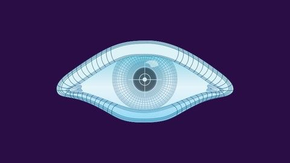
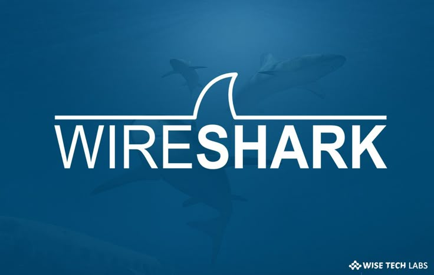

About Me
I am Ian Karanja, an aspiring Cybersecurity Analyst pursuing a Bachelor's in Computer Science at Zetech University. I focus on network analysis, security tools, and offensive security techniques, building my skills through hands-on projects and CTF challenges.
Skilled in Python scripting and proficient with tools like Nmap, Wireshark, and Burp Suite, I have also built a Python-based network scanner for detecting active hosts. I hold certifications from Cisco (CEH via Cyber Shujaa), Fortinet (Threat Landscape), and Udemy (Web Development & WordPress).
Download CVSkills

Python Scripting

Nmap

Wireshark
Burp Suite
Web Development / WordPress
Projects
Python Network Scanner
A Python-based tool that detects active hosts on the internet, helping with network reconnaissance and understanding network behaviors.
View on GitHubCertifications
Contact
Email: iankaranja13763@gmail.com
Phone: +254708272892
GitHub: github.com/Karanjaian
LinkedIn: LinkedIn Profile
Download CV